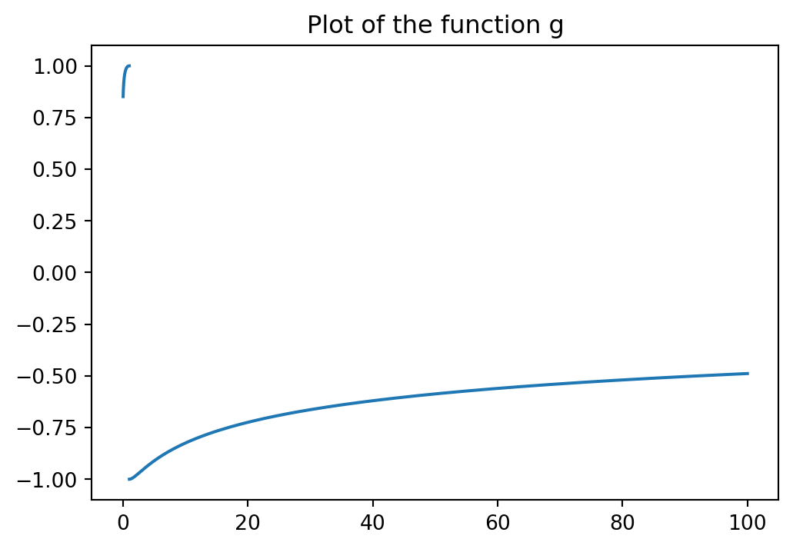

A Blog Entry on Bayesian Computation by an Applied Mathematician
$$
$$
1 GAN (Goodfellow et al., 2014)

1.1 導入
GAN 以前の深層生成モデルは，学習の難しさから，データ生成分布にパラメトリックな仮定をおき，その中で 最尤推定 を行うことが一般的であった．深層 Boltzmann マシン (Salakhutdinov and Hinton, 2009) もその例である．
複雑なモデルで尤度を解析的に計算することは困難である．そのために，MCMC によるサンプリングによりこれを回避することを考え，その Markov 連鎖の遷移核を学習するという生成確率的ネットワーク (GSN: Generative Stochastic Network) などのアプローチ (Bengio et al., 2014) も提案されていた．
GAN (Generative Adversarial Network) は，このような中で (Goodfellow et al., 2014) によって提案された深層生成モデルである．GAN も尤度の評価を必要としないが，MCMC などのサンプリング手法も用いず，ただ誤差逆伝播法のみによって学習が可能である．
同時の深層学習は，ImageNet コンペティションにおいて大成功を収めた AlexNet (Krizhevsky et al., 2012) など，主に識別のタスクにおいて大きな成功を収めていたが，生成モデルにおいては芳しくなかった．
主な障壁は
- 分布の近似が難しいこと
- 区分的線型な活性化関数を用いても勾配を通じた学習が難しいこと
の２点であったが，GAN はこの２つの問題を回避すべく提案された．
生成モデル \(G\) に対して，判別モデル \(D\) を対置し，加えて \((G,D)\) をセットで誤差逆伝播法とドロップアウト法 (Hinton et al., 2012)（当時深層識別モデルを最も成功させていた学習法）により学習可能にしたのである．
1.2 枠組み
データの空間を \(x\in\mathcal{X}\) とし，潜在変数の値域 \(\mathcal{Z}\) とその上の確率測度 \(P_z\in\mathcal{P}(\mathcal{Z})\)，そして深層ニューラルネットワークのパラメータ空間 \(\Theta_g\) を用意して，生成モデルを写像 \(G:\mathcal{Z}\times\Theta_g\to\mathcal{X}\) とする．
生成モデル \(G\) は押し出しによりモデル \(\{G(-,\theta_g)_*P_z\}_{\theta_g\in\Theta_g}\) を定める．
このモデルの密度（尤度）の評価を回避するために，これに判別モデル \(D\) を対置する．これは，パラメータ \(\theta_d\in\Theta_d\) を通じて学習される写像 \(D:\mathcal{X}\times\Theta_d\to[0,1]\) とし，あるデータ \(x\in\mathcal{X}\) を観測した際に，これが \(G\) から生成されたものではなく，実際の訓練データである確率を \(D(x)\) によって近似することを目指す．
この組 \((G,D)\) に対して， \[ V(D,G):=\operatorname{E}[\log D(X)]+\operatorname{E}[\log(1-D(G(Z))] \] \[ X\sim P_{\text{data}},\quad Z\sim P_z \] を目的関数とし， \[ \min_{G\in\mathrm{Hom}_\mathrm{Mark}(\mathcal{Z}\times\mathcal{G}_g,\mathcal{X})}\max_{D\in\mathcal{L}(\mathcal{X};[0,1])}V(D,G) \tag{1}\] を解く，ミニマックスゲームを考える．1
1.3 理論
\(G\) と \(D\) が表現するモデルが十分に大きいとき，すなわち \(\Theta_g,\Theta_d\) が十分に大きく，殆どノンパラメトリックモデルであるとみなせる場合には，学習基準 Equation 1 は真の生成分布 \(P_{\text{data}}\) に収束するアルゴリズムを与える．
このことを示すには，\(P_{\text{data}}\) が，Equation 1 の大域的最適解であることを示せば良い．
これより，訓練基準 Equation 1 はただ一つの大域的な最適解を持ち，これは \(P_{\text{data}}=G_*P_z\) かつ \(D^*=\frac{1}{2}\) のときに最小値 \(-2\log2\) を取るということが判る．
1.4 アルゴリズムとその収束
組 \((G,D)\) を勾配降下法により同時に学習するには，
- 判別器 \(D\) の最大化ステップ
- ミニバッチ \(\{z^i\}_{i=1}^m\) と \(\{x^i\}_{i=1}^m\) をそれぞれ \(P_z\) と \(P_{\text{data}}\) からサンプリングする．
- 確率的勾配 \[ D_{\theta_d}\frac{1}{m}\sum_{i=1}^m\left(\log D(x^i)+\log(1-D(G(z^i)))\right) \] の増加方向にパラメータ \(\theta_d\) を更新する．
- 生成モデル \(G\) の最小化ステップ
- ミニパッチ \(\{z^i\}_{i=1}^m\) を \(P_z\) からサンプリングする．
- 確率的勾配 \[ D_{\theta_g}\sum_{i=1}^m\log\biggr(1-D(G(z^i))\biggl) \] の減少方向にパラメータ \(\theta_g\) を更新する．
というアルゴリズムを実行すれば良い．(Goodfellow et al., 2014 p.) の数値実験ではモーメンタム法 (Rumelhart et al., 1987, p. 330) が用いられている．
実際は，\(G\) はパラメトリックモデル \(\{G_*P_z(\theta,-)\}_{\theta\in\Theta_g}\) であるから，その分の誤差は残ることになる．
また，\(D\) が最適化されていない状況で \(G\) が学習されすぎると，多くの \(z\in\mathcal{Z}\) の値を \(D\) が不得意な判別点 \(x\in\mathcal{X}\) に対応させすぎてしまうことがあり得る．
\(P_{\text{data}}\) が強い多峰性を持つ場合でも効率よく学習することができる．これは同じ確率分布からのサンプリング手法として，MCMC にはない美点になり得る (Goodfellow et al., 2014, p. 6)．
1.5 補遺：Jensen-Shannon 乖離度のその他の性質
1.5.1 情報理論からの導入
乖離度としての Jensen-Shannon 乖離度は (Lin, 1991) で最初に導入されたようである．
が，その以前から， \[ \operatorname{JS}(P,Q)=2H\left(\frac{P+Q}{2}\right)-H(P)-H(Q) \] という関係を通じて，(Rao, 1982, p. 25) などは右辺を Jensen 差分 (difference) と呼んでいたようである．(Rao, 1987, p. 222) は，\(H\) が Shannon のエントロピーではなくとも，有用な性質を持つことを情報幾何学の立場から議論している．
1.5.2 JS 乖離度が定める距離
\[ \biggr(\operatorname{JS}(P,Q)\biggl)^\alpha \] が \(\alpha=\frac{1}{2}\) において距離をなすことを示したが，実は一般の \(\alpha\in(0,1/2]\) に関して距離をなす (Osán et al., 2018)．
1.5.3 変分問題としての特徴付け
1.5.4 有界な距離である
1.5.5 \(\chi^2\)-距離に漸近する (Endres and Schindelin, 2003, p. 1859)
1.5.6 \(f\)-乖離度の例である
\(f\)-乖離度の考え方は (Rényi, 1961, p. 561) で導入された．他，(Csiszár, 1963), (Morimoto, 1963), (Ali and Silvey, 1966) なども独立に導入している．
KL-乖離度は \[ f(x)=x\log x \] について，JS-乖離度は \[ f(x)=x\log\frac{2x}{x+1}+\log\frac{2}{x+1} \] についての \(f\)-乖離度である．
全変動ノルムも \[ f(x)=\lvert x-1\rvert \] に関する \(f\)-乖離度である．
さらには，\(\alpha\)-乖離度 も \(f\)-乖離度の例である．
2 GAN の改良
(Nowozin et al., 2016) による \(f\)-GAN，(Arjovsky et al., 2017) による Wasserstein GAN など，GAN の改良が続いている．
2.1 \(f\)-GAN
JS-乖離度に限らず一般の \(f\)-乖離度 Section 1.5.6 に関して，GAN が構成できる (Nowozin et al., 2016)．
この一般化により，GAN の枠組みの本質は凸解析に基づくものであることが明らかになる．
2.2 GAN の学習の問題点
- やはり多峰性に弱く，モードのうちいくつかが再現されないことがある (Mode collapse)．
- 収束判定が困難である．これは学習基準が最小化ではなく均衡点を求めることにあることにも起因する．
- 勾配消失が起こる．
2.3 Wasserstein GAN
最後の勾配消失の問題は，JS-乖離度の性質にあるとして，これを Wasserstein 距離に取り替える形で提案されたのが Wasserstein GAN である (Arjovsky et al., 2017)．
References
Ali, S. M., and Silvey, S. D. (1966). A general class of coefficients of divergence of one distribution from another. Journal of the Royal Statistical Society. Series B (Methodological), 28(1), 131–142.
Arjovsky, M., Chintala, S., and Bottou, L. (2017). Wasserstein generative adversarial networks. In Proceedings of the 34th international conference on machine learning,Vol. 70, pages 214–223.
Bengio, Y., Laufer, E., Alain, G., and Yosinski, J. (2014). Deep generative stochastic networks trainable by backprop. In Proceedings of the 31st international conference on machine learning,Vol. 32, pages 226–234.
Csiszár, I. (1963). Eine informationstheoretische ungleichung und ihre anwendung auf beweis der ergodizitaet von markoffschen ketten. Magyár Tudomá Akadémia Mahematikai Kutató Intézetének Köezleményei, 6, 85–108.
Endres, D. M., and Schindelin, J. E. (2003). A new metric for probability distributions. IEEE Transactions on Information Theory, 49(7), 1858–1860.
Goodfellow, I., Pouget-Abadie, J., Mirza, M., Xu, B., Warde-Farley, D., Ozair, S., … Bengio, Y. (2014). Generative adversarial nets. In Advances in neural information processing systems,Vol. 27, pages 1–9.
Hinton, G. E., Srivastava, N., Krizhevsky, A., Sutskever, I., and Salakhutdinov, R. R. (2012). Improving neural networks by preventing co-adaptation of feature detectors.
Krizhevsky, A., Sutskever, I., and Hinton, G. E. (2012). ImageNet classification with deep convolutional neural networks. In Advances in neural information processing systems,Vol. 25.
Lin, J. (1991). Divergence measures based on the shannon entropy. IEEE Transactions on Information Theory, 37(1), 145–151.
Morimoto, T. (1963). Markov processes and the \(H\)-theorem. Journal of the Physical Society of Japan, 18(3), 328–331.
Nielsen, F. (2021). On a variational definition for the jensen-shannon symmetrization of distances based on the information radius. Entropy, 23(4), 464.
Nowozin, S., Cseke, B., and Tomioka, R. (2016). F-GAN: Training generative neural samplers using variational divergence minimization. In Advances in neural information processing systems,Vol. 29.
Osán, T. M., Bussandri, D. G., and Lamberti, P. W. (2018). Monoparametric family of metrics derived from classical jensen-shannon divergence. Physica A: Statistical Mechanics and Its Applications, 495, 336–344.
Rao, C. R. (1982). Diversity and dissimilarity coefficients: A unified approach. Theoretical Population Biology, 21(1), 24–43.
Rao, C. R. (1987). Differential metrics in probability spaces. IMS Lecture Notes Monograph Series, 10, 217–240.
Rényi, A. (1961). On measures of entropy and information. In Proceedings of the fourth berkeley symposium on mathematical statistics and probability,Vol. 1, pages 547–561.
Rumelhart, D. E., Hinton, G. E., and Williams, R. J. (1987). Parallel distributed processing: Explorations in the microstructure of cognition: foundations. In D. E. Rumelhart and J. L. McClelland, editors, pages 318–362. MIT Press.
Salakhutdinov, R., and Hinton, G. (2009). Deep boltzmann machines. In Proceedings of the twelth international conference on artificial intelligence and statistics,Vol. 5, pages 448–455.
Footnotes
この基準にしたがって学習すると，\(G\) が外れすぎている際，\(\log(1-D(G(z)))\) が殆ど \(0\) になり得る．そのような場合は，\(\log D(G(z))\) の最大化を代わりに考えることで，学習が進むことがある (Goodfellow et al., 2014, p. 3)．↩︎